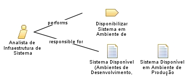

| Role: Analista de Infraestrutura de Sistema |
| |
 |
| Responsável por atualizações de versão, merges de código e disponibilização do sistema em ambientes. |
|
Relationships
 |
| Primary Performs |
|
| Modifies |
|
| Process Usage |
|
Main Description
| O Analista de Infraestrutura de Sistemas é o profissional responsável pelas atualizações de versão do sistema, por realizar
os merges necessários no repositório de código e pela disponibilização do sistema nos ambientes de teste, homologação e
produção. Este papel está alocado principalmente na DDS, embora, quando necessário, analistas vinculados à DS também possam
ser acionados para apoiar nas atividades. |
Staffing
| Skills | Administração de sistemas; Gerenciamento de repositórios de código (Git/SVN); Automação de deploy; Gerenciamento de
ambientes (teste, homologação, produção); Conhecimento em infraestrutura de TI. |
|